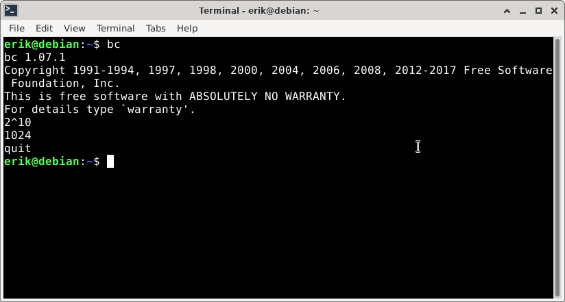
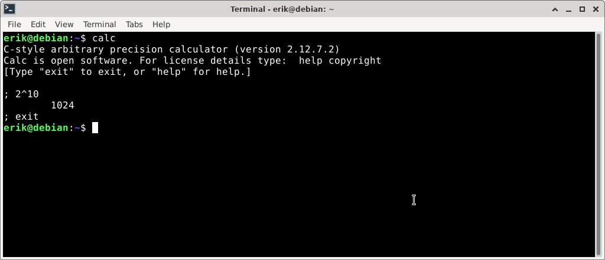
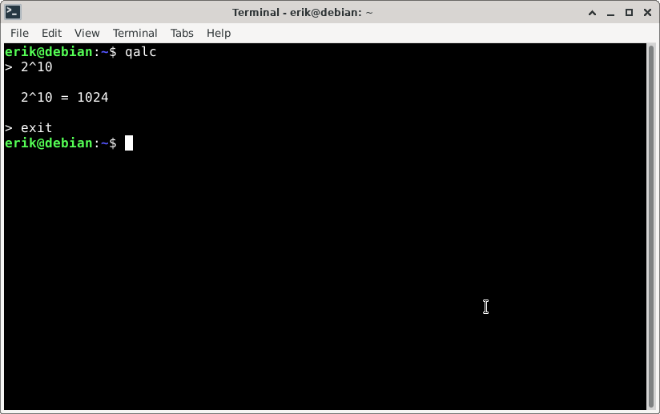

Asetin tehtäväksi käyttää komentokehotetta laskimena ja laskea 2 potenssiin 10. Vastaukseksi pitäsisi tulla 1024.
Googlailun jälkeen luin että on olemassa seuraavat laskinohjelmat: bc, calc ja qalc.
Asensin ohjelman bc komennolla sudo apt install bc. Kokeilin ohjelman kuten alla näkyy ja se toimi hyvin.
Asensin ohjelman calc komennolla sudo apt install calc. Kokeilin ohjelman kuten alla näkyy ja se toimi hyvin.
Asensin ohjelman qalc komennolla sudo apt install qalc. Kokeilin ohjelman kuten alla näkyy ja se toimi hyvin.
